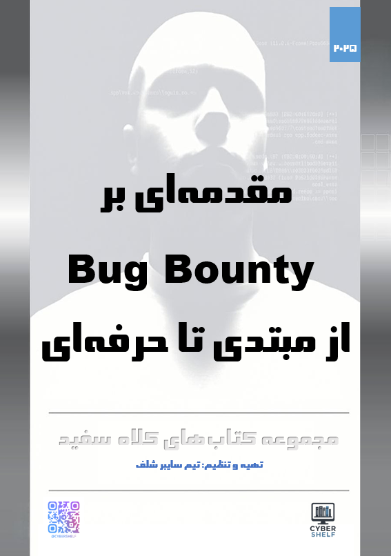
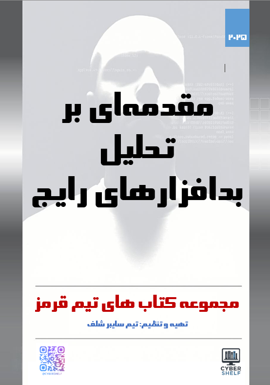
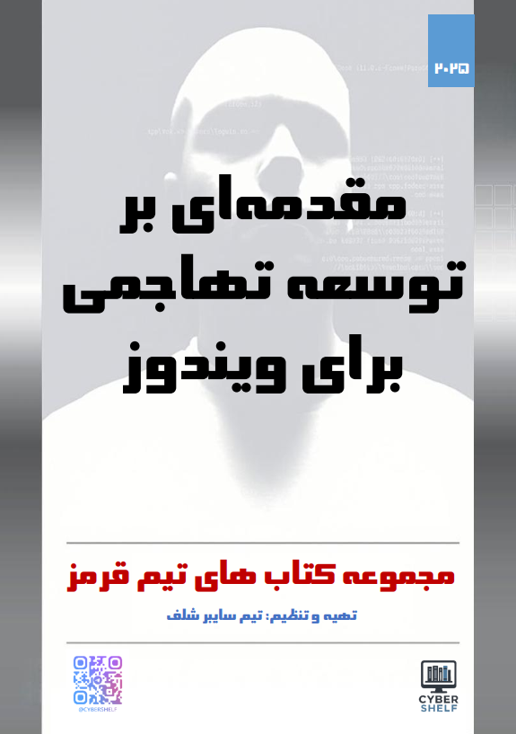

رایگان
سامانه یادگیری سایبر شلف
کتابهای فارسی و کاربردی برای Red Team، تحلیل بدافزار، امنیت ویندوز و Bug Bounty؛ همراه با مسیرهای پیشنهادی برای انتخاب آگاهانه.
$ cybershelf start
✓ مبانی امنیت سایبری
✓ سیستمعامل و شبکه
✓ ابزارهای عملی
→ انتخاب مسیر تخصصی
Red Team | Malware | Blue Team
ready_
پیشنهاد برای شروع امنیت وب
یک مسیر فارسی و مرحلهای برای آشنایی با مبانی، شناسایی و کلاسهای مهم آسیبپذیری؛ مناسب برای بررسی دقیق مسیر پیش از ورود جدی به شکار باگ.
کتابهای تألیفی سایبر شلف
موضوع، سطح، تعداد صفحات و نوع نسخه را مقایسه کنید و برای جزئیات کامل وارد صفحه هر کتاب شوید.


Malware Analysis Introduction

AV/EDR Evasion: Practical Techniques

Offensive Development Introduction
انتخاب آگاهانه پیش از سفارش
اطلاعات موردنیاز انتخاب کتاب پیش از ثبت درخواست، شفاف و قابل بررسی است.
هر عنوان روی یک مسیر مشخص مانند Red Team، تحلیل بدافزار، امنیت ویندوز یا Bug Bounty تمرکز دارد.
فهرست فصلها و ریزموضوعات در صفحه کتاب قابل مشاهده است تا محتوای کتاب را پیش از سفارش ارزیابی کنید.
نویسنده، ناشر، تعداد صفحات، نوع نسخه و قیمت هر عنوان در صفحه معرفی درج شده است.
یادگیری هدفمند و مرحلهای
سه مسیر منتخب برای شروع؛ فهرست کامل مسیرها در صفحه اختصاصی در دسترس است.
نوشتههای کوتاه و دقیق برای امنیت وب، عملیات و آگاهی سازمانی.
تازهترین خبرها و یادداشتهای کوتاه امنیت سایبری از کانال رسمی سایبر شلف.
پیش از ثبت درخواست
اگر درباره کتاب یا مسیر مناسب مطمئن نیستید، پاسخ پرسشهای رایج را ببینید یا درخواست مشاوره ثبت کنید.
در صفحه معرفی کتاب، مشخصات، توضیحات و فهرست فصلها و ریزموضوعات قرار دارد.
از صفحه کتاب روی «ثبت درخواست خرید» بزنید؛ عنوان کتاب در فرم قرار میگیرد و درخواست شما برای ادامه هماهنگی ارسال میشود.
سطح و موضوع روی کارت هر کتاب مشخص است. برای انتخاب دقیقتر میتوانید مسیرهای یادگیری را ببینید یا درخواست مشاوره ثبت کنید.